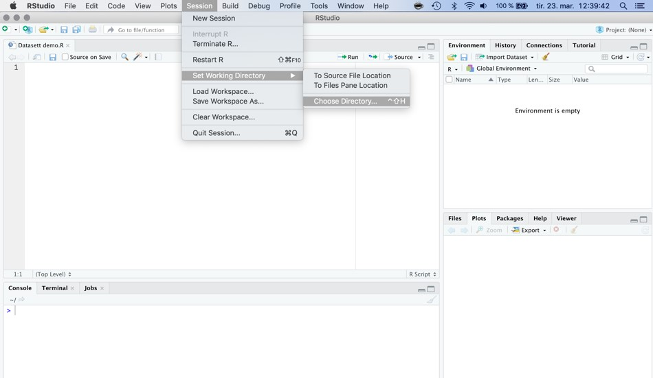
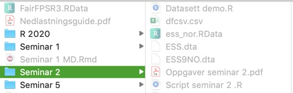
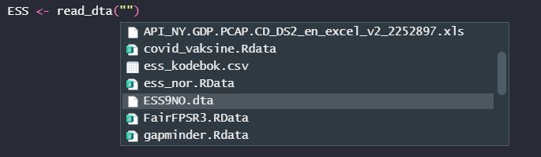
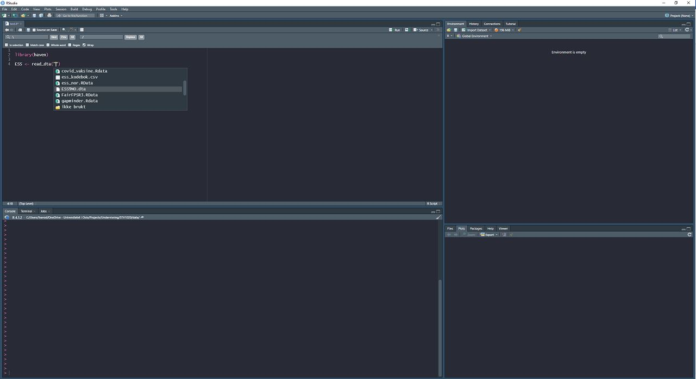
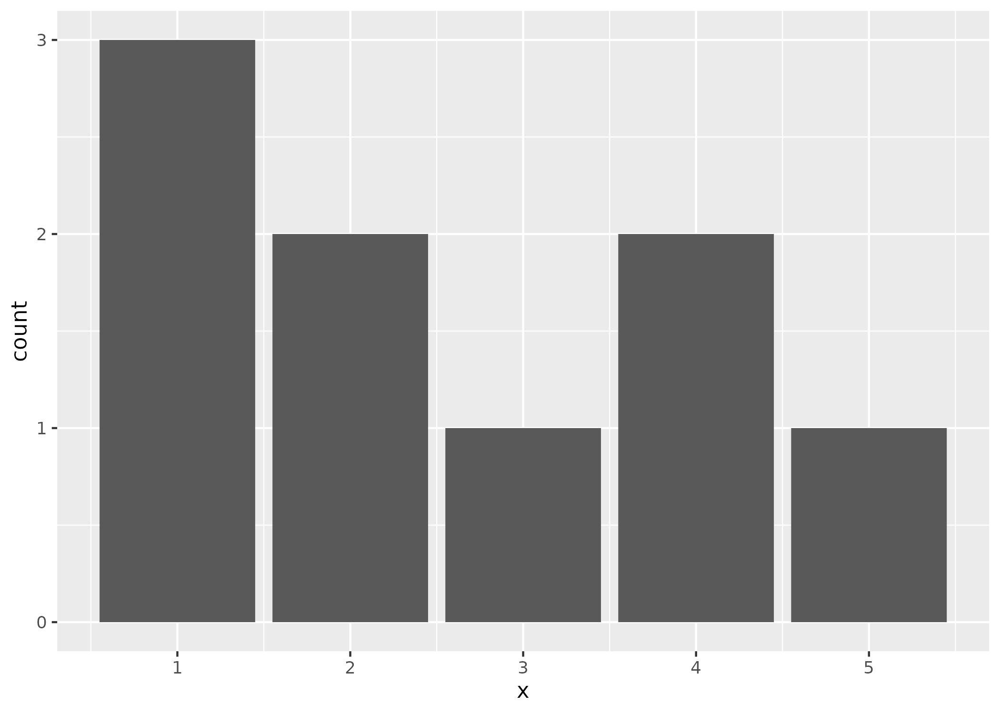

install.packages("readxl")
library(readxl)
navn <- read_excel("file")3. Guide for innlastning av datasett
Veiledning for innlastning av data
Når du skal laste inn et datasett til RStudio, og det oppstår problemer, kan du sjekke tipsene under. Her er eksemplene fra en Mac, men de samme løsningene vil finnes også på Windows og Linux.
Riktig working directory?
Pass på at du enten åpner prosjektfilen din eller setter working directory til en mappe du finner igjen. For eksempel kan du lage en mappe som heter “R-seminar” på skrivebordet, og så lage undermapper for hvert seminar. Dere kan sette working directory som vist under, eller bruke koden setwd(). Hvis dere vil dobbeltsjekke, bruk koden getwd().

Det aller viktigste er å finne en god måte å strukturere prosjektene sine på. Eksempelvis R Best Practices”. Ta gjerne også en titt på RStudios/posit egen side for hvordan man bruker prosjekter.
Plassere datasettfil
Pass på at datasettfilen ligger i mappen du prøver å hente den fra. For eksempel er det lurt å ha datasett i en egen datamappe der prosjektfilen din er lagret. På bildet under ser dere hvordan det er gjort i dette eksempelet.

Sjekk koden for feil
Dobbeltsjekk koden du skriver i RStudio, sjekk for skrivefeil, parenteser og hermetegn, og at filnavnet er det samme som du har lagret filen som.
Bruk gjerne tab for å finne frem filen din for å unngå problemer med skrivefeil. Still markøren i hermetegnene i koden for å laste inn data og trykk på tab-knappen (hvilken knapp det er kan du google) for å liste opp mapper og filer i working directory/prosjektmappen din. Om datafilen er lagret i working directory/prosjektmappen så bør den komme opp i en liste som vist i bildene under.


Koder for å laste inn ulike filtyper
Her er de ulike kodene for å laste inn filtyper. Der det står “navn” er navnet dere gir objektet, dette finner dere på selv. Der det står “file” skal dere sette inn filnavnet. Altså det filen heter i mappen dere lagret den i.
Excel-fil (slutter på f.eks. .xlsx)
CSV-fil (slutter på f.eks. .csv)
navn <- read.csv("file")
navn <- read.csv2("file")RData-fil (slutter på .Rdata)
load("file")
# Merk at her gir du ikke datasettet et eget navnStata-fil (slutter på .dta)
install.packages("haven")
library(haven)
navn <- read_dta("file")SPSS-fil (slutter på .sav)
install.packages("haven")
library(haven)
navn <- read_sav("file")Vær obs på at variabler som egentlig er faktorer kan bli lest som numeriske ved bruk av haven. Derfor er det ekstra viktig å sjekke kodebok og/eller labels.
Hvis dere har fulgt stegene over, men likevel ikke får lastet inn datasettet:
- Sjekk om pakkene du har installert er oppdatert.
- For å undersøke om noen av pakkene trenger en oppdatering, kan dere trykke på ‘tools’ og ‘check for package updates’.
- Eller kjøre koden
update.packages(ask = FALSE)
- Hvis du har Mac, sjekk at maskinen din er oppdatert.
- Er du usikker på hvordan så se på Apple sine support-sider
- Sjekk at du har riktig versjon av R og Rstudio for maskinen din
- Er du usikker så sjekk installasjonsveiledningen
Hvis dere har gått gjennom alle stegene, og likevel ikke får lastet inn datasettene så er neste steg å gå innom kodekafé for å få hjelp.
Undersøke om tidyverse er installert
For å undersøke om tidyverse er installert kan dere kjøre koden under. Du skal få opp et plot nederst til høyre i RStudio når du kjører koden:
# Install.packages er ikke nødvendig å kjøre om du allerede har installert pakken
install.packages("tidyverse")
library(tidyverse)
data <- data.frame(x = c(1,1,1,2,2,3,4,4,5))
ggplot(data = data, aes(x = x)) +
geom_bar()Plottet skal se omtrent slik ut:
